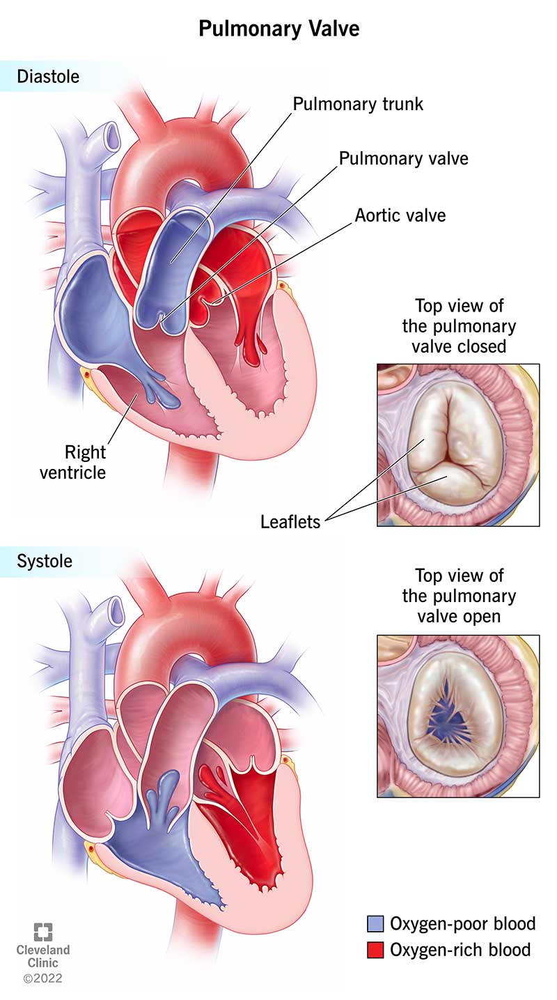

Pulmonary Valve
The pulmonary valve is one of the four valves in the heart, located between the right ventricle and the
pulmonary artery. Its primary role is to ensure the unidirectional flow of deoxygenated blood from the right
ventricle into the pulmonary artery, which leads to the lungs for oxygenation.

Structure
- The pulmonary valve consists of three semilunar cusps (or leaflets): left, right, and anterior.
- These cusps are shaped like a half-moon, which is why it's called a semilunar valve.
- The valve opens and closes based on pressure differences between the right ventricle and the pulmonary artery.
Working Mechanism
Ventricular Filling (Diastole):
- During ventricular filling, when the right ventricle is relaxed, the pulmonary valve is closed.
- Blood flows from the right atrium into the right ventricle through the tricuspid valve during this phase.
Ventricular Contraction (Systole):
- When the right ventricle contracts, pressure inside the ventricle increases.
- This increased pressure forces the pulmonary valve to open, allowing deoxygenated blood to flow from the right
ventricle into the pulmonary artery.
- The blood then travels through the pulmonary artery to the lungs for oxygenation.
Closure of the Pulmonary Valve
- After the right ventricle has finished contracting and begins to relax (early diastole), the pressure in the
pulmonary artery becomes higher than in the right ventricle.
- This pressure difference causes the pulmonary valve to close, preventing blood from flowing back into the right
ventricle (backflow or regurgitation).
- The semilunar cusps of the valve catch the blood trying to flow back and seal the valve shut, ensuring one-way
blood flow.
Importance of the Pulmonary Valve
- Prevents Backflow: The pulmonary valve's key function is to prevent the backflow of blood from the pulmonary
artery into the right ventricle after the ventricular contraction ends.
- Blood to the Lungs: It ensures that blood moves from the right ventricle to the lungs, where it gets
oxygenated.
Pulmonary Valve Disorders
1. Pulmonary Stenosis:
- In this condition, the pulmonary valve is abnormally narrow or stiff, which restricts blood flow from the right
ventricle to the pulmonary artery.
- The right ventricle has to work harder to pump blood, leading to increased pressure and potential right
ventricular hypertrophy.
2. Pulmonary Regurgitation:
- This occurs when the pulmonary valve doesn’t close properly, allowing blood to leak back into the right ventricle
from the pulmonary artery.
- It can cause the right ventricle to become dilated due to the extra volume of blood it must handle.
3. Congenital Defects:
- Some people are born with defects in the pulmonary valve, such as a bicuspid pulmonary valve (having two cusps
instead of three).
- This can lead to improper valve function and may require surgical correction.
Relation to Pulmonary Circulation
- The pulmonary valve is crucial in the pulmonary circulation process, where deoxygenated blood from the body is
sent to the lungs to pick up oxygen.
- It works in tandem with the right ventricle and pulmonary artery to facilitate the transfer of blood to the lungs.